You can review the following documents for additional information: 以下是我歷年來的作品，包含資料視覺化、專題報告、競賽提案、空間規劃設計等，歡迎參考！
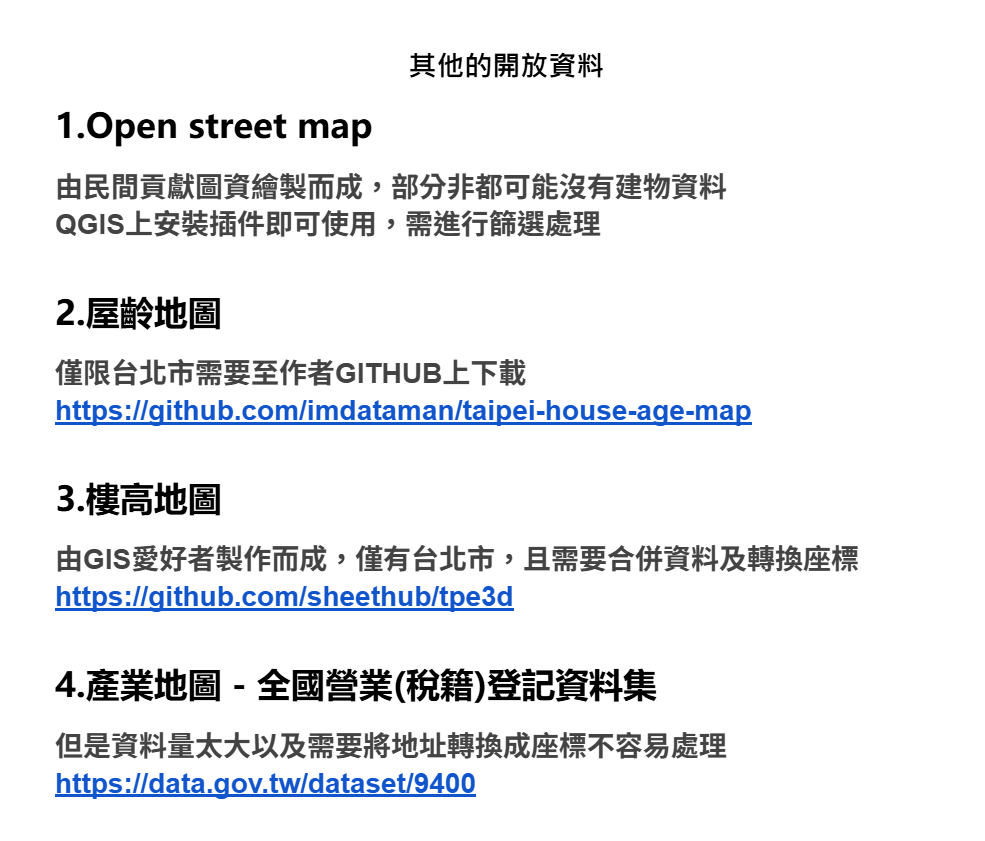
包含WMTS圖資介接網址、政府開放資料、民間的開源資料。
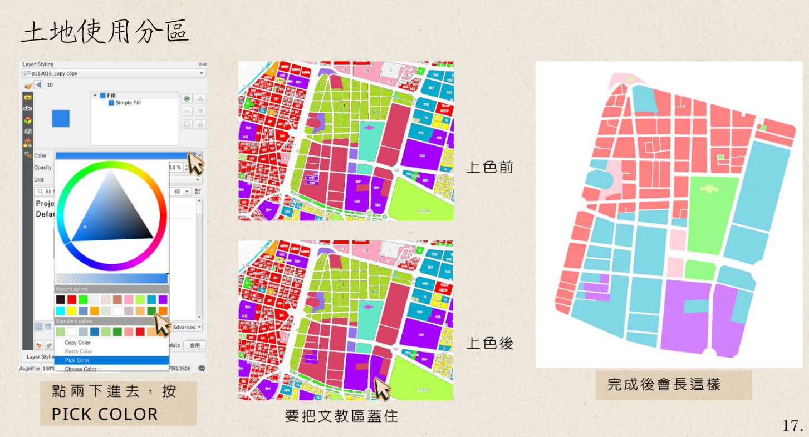
包含基本的QGIS介面環境介紹與如何數化，最後透過土地使用分區 開放資料講解如何為圖資上色與簡易layout出圖。
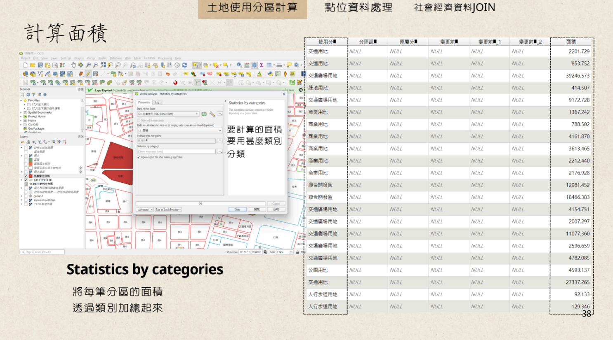
講解如何透過QGIS計算使用分區面積並加總統計，還有YOUBIKE站點如何匯入空間資訊 以及社會經濟資料與村里界JOIN的數據視覺化。
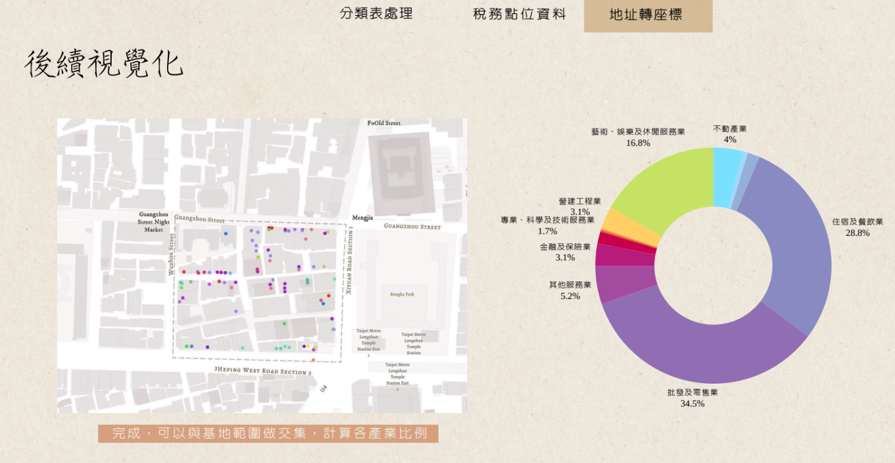
首先教你行業如何統計，然而因為稅籍資料並沒有包含行業類別代碼，因此需要透過 EXCEL表格整理、JOIN的方式來操作，最後再透過GEOCODING，即可得到商家的點位分布圖以及統計行業類別。
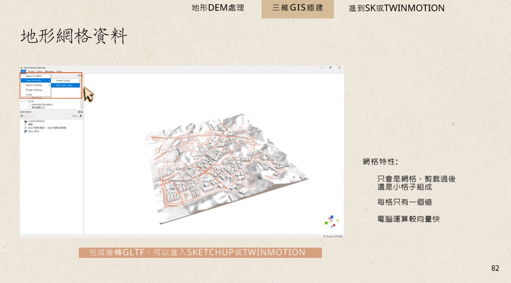
從3D的GIS出發，教你建物圖資如何長高、並運用DEM數值高程模型資料，透過 3D插件做出小模型，也可以進到sketchup等軟體進行渲染。
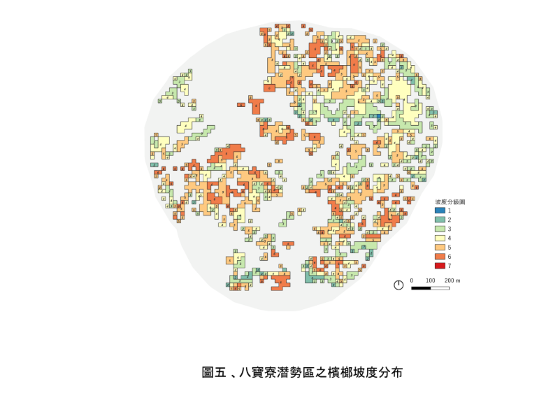
本研究目的是藉由針對檳榔所謂於山坡地上的危險因子(如陡坡、土壤層脆弱、 近斷層處等)進行轉種的評估,根據所佔的不同面積,以期了解檳榔轉種的優先順序。
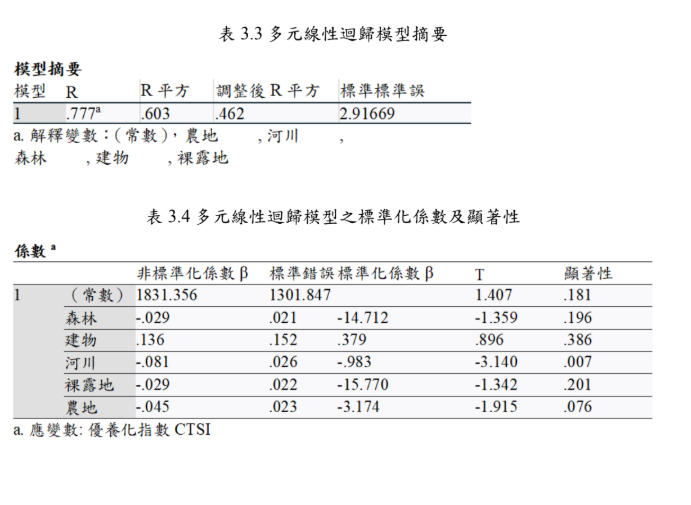
本研究在探討中小尺度封閉水域(如湖泊、人工水庫等,本研究選取德基水庫 分析)之優養化程度與其臨近區域之長期大氣因子、土地利用種類及配置的相關 性。
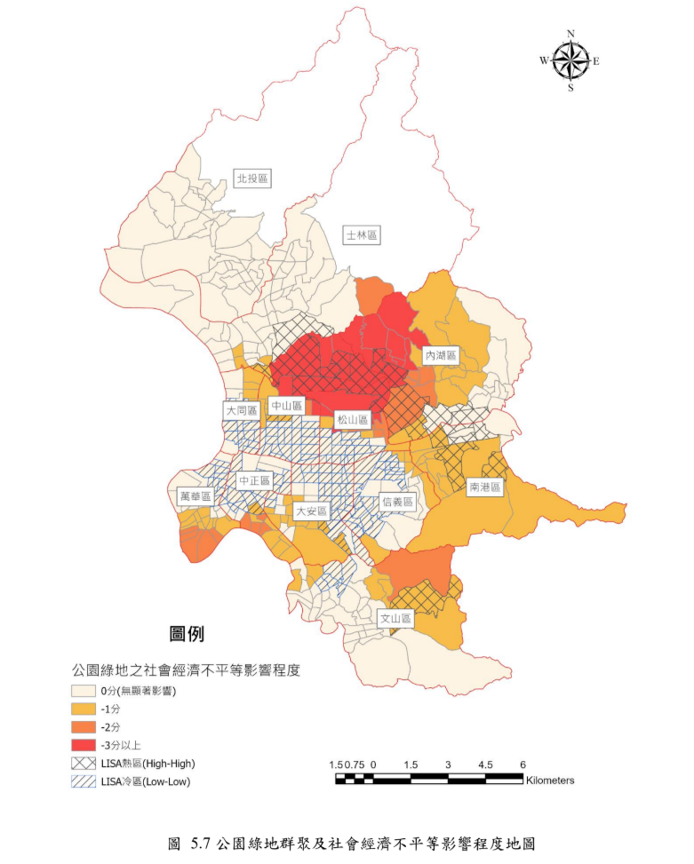
研究採用 OLS 最小平方法和地理加權迴歸(GWR)兩種方法,以社會脆弱度作為 主要自變數,公園綠地面積作為應變數。透過分析,可辨識出哪些社會經濟特徵的族 群最易受到公園綠地分配不均的影響,並揭示不同地區的空間異質性。
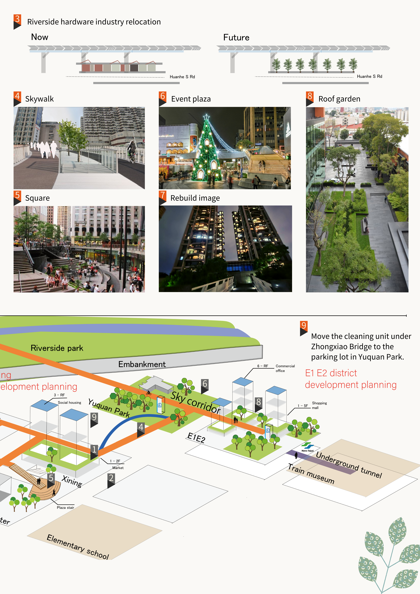
西門戶廊伸計畫 規劃，透過人本空橋的串聯，將引導至淡水河濱，滿足各式商業、休閒、居住等多元活動。
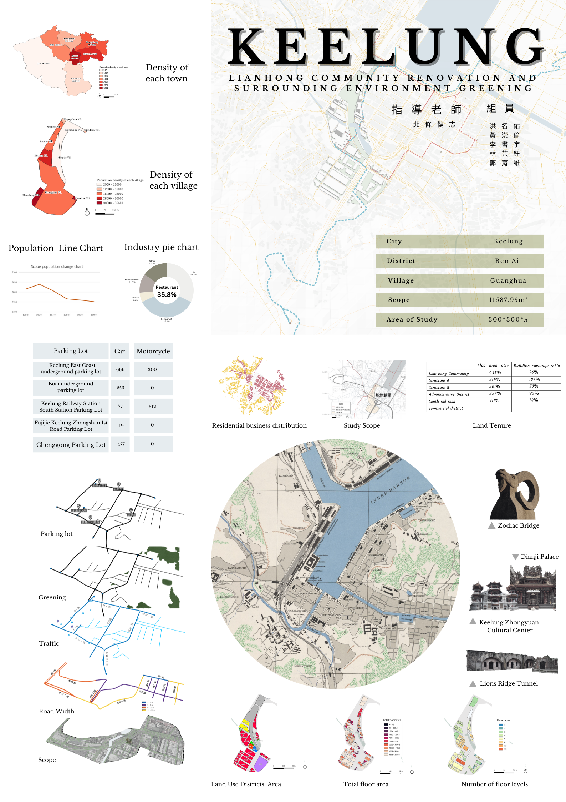
透過步道景觀規劃，串聯歷史地景起自獅球嶺至基隆港，配合西定河水質蓋善工程，期望翻轉市容 沿著西定河岸的步道景觀改造。
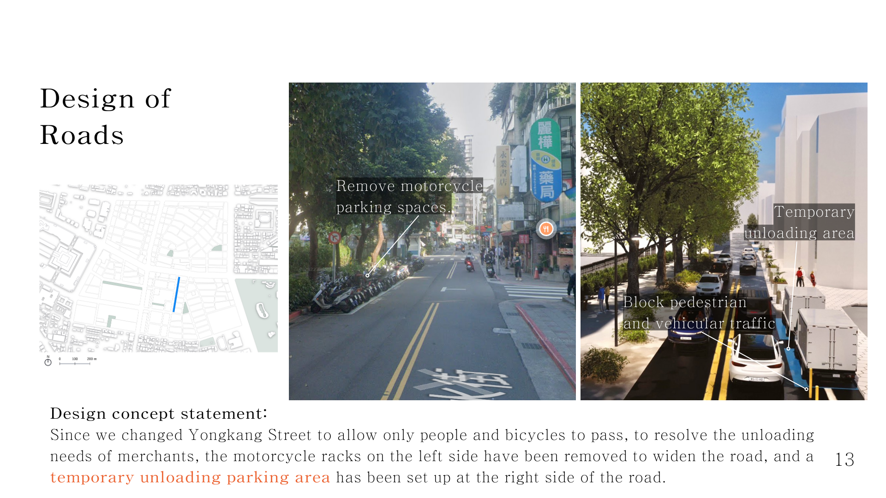
以捷運場站TOD作為規劃範圍，自行車、人行徒步區的改造強化綠色網絡的串聯， 也減少私人載具的使用。
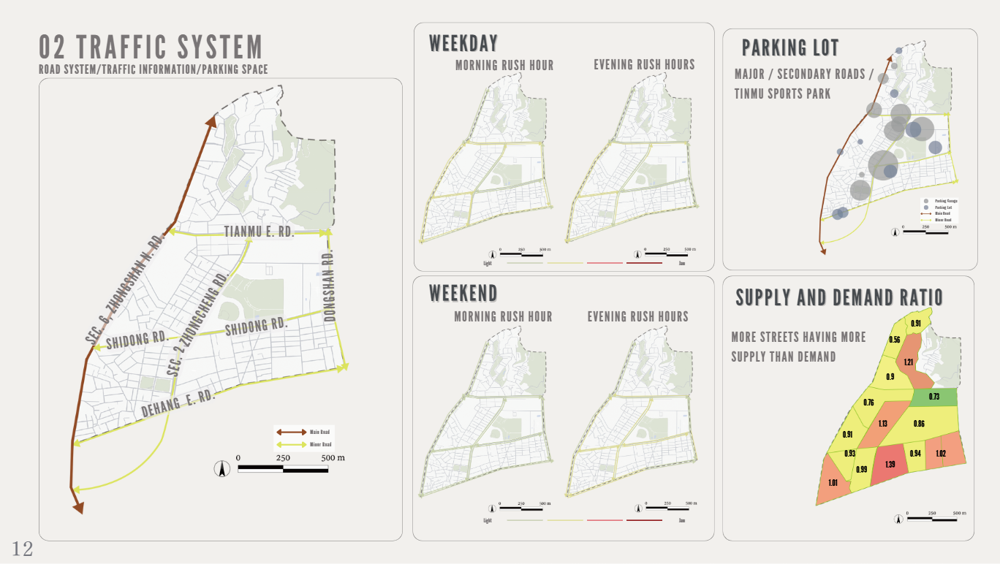
職訓大樓重新改建之規劃，並因應高齡化社會引入長照機構及實習餐廳，當中也 提供高齡者的二度就業輔導機制，共創青銀共學的和諧願景
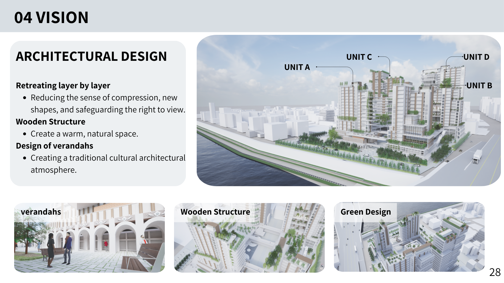
以台北市優先劃定更新地區為規劃範圍，運用都市設計及退縮的檢討，以爭取更多容積 獎勵，並打造公共設施回饋當地居民。
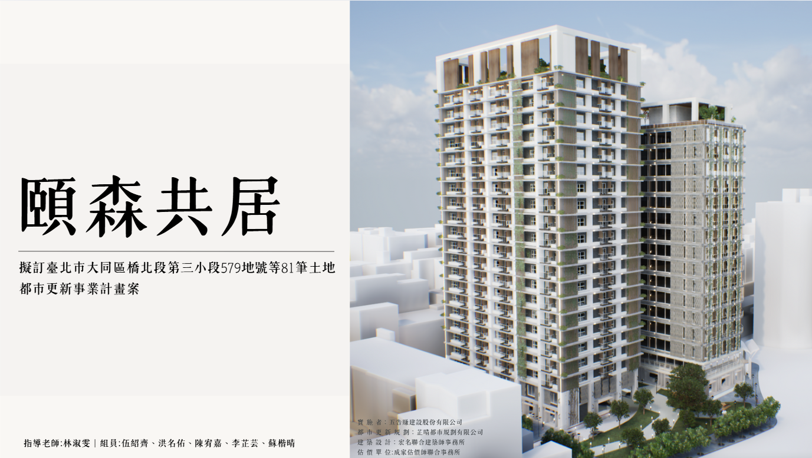
大橋頭捷運站周遭的都市更新規劃模擬，計算同意比率及選配，設計出符合法律實務之 產品，提出合理房型供不同比例之所有權人分回，並導入長照及商業空間，滿足當地需求。
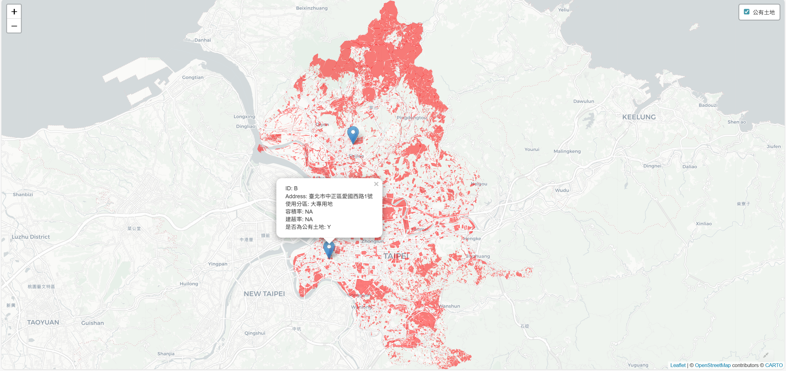
使用 R 語言進行撰寫迴圈讀取公有土地資料KML進行視覺化練習。